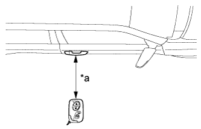
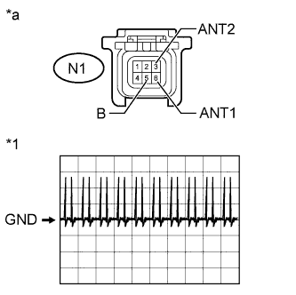

ENTRY AND START SYSTEM (for Entry Function) > Front Passenger Side Door Entry Lock and Unlock Functions do not Operate |
| 1.CHECK POWER DOOR LOCK OPERATION |
When the door control switch on the multiplex network master switch assembly is operated, check that the doors unlock and lock according to the switch operation (Click here).
|
| ||||
| OK | |
| 2.READ VALUE USING INTELLIGENT TESTER (DOOR LOCK POSITION SWITCH) |
Connect the intelligent tester to the DLC3.
Turn the engine switch on (IG).
Turn the intelligent tester on.
Enter the following menus: Body / Main Body / Data List.
Read the Data List according to the display on the intelligent tester.
| Tester Display | Measurement Item/Range | Normal Condition | Diagnostic Note |
| FR Door Lock Pos | Front RH side door lock position switch signal / UNLOCK or LOCK | UNLOCK: Front RH side door unlocked LOCK: Front RH side door locked | - |
|
| ||||
| OK | |
| 3.CHECK ELECTRICAL KEY ANTENNAS IN KEY DIAGNOSTIC MODE |
Check the following antennas in the key diagnostic mode (Click here).
|  |
Check the electrical key antenna (for front passenger side):
| *a | 0.7 to 1 m (2.30 to 3.28 ft.) |
|
| ||||
| OK | ||
| ||
| 4.CHECK HARNESS AND CONNECTOR (FRONT DOOR OUTSIDE HANDLE RH - CERTIFICATION ECU) |
Disconnect the N1 front door outside handle assembly RH connector.
Disconnect the G26 certification ECU connector.
Measure the resistance according to the value(s) in the table below.
| Tester Connection | Condition | Specified Condition |
| N1-3 (ANT2) - G26-6 (CG2B) | Always | Below 1 Ω |
| N1-6 (ANT1) - G26-5 (CLG2) | Always | Below 1 Ω |
| N1-5 (B) - G26-33 (POS2) | Always | Below 1 Ω |
| N1-2 (GND) - Body ground | Always | Below 1 Ω |
| N1-3 (ANT2) or G26-6 (CG2B) - Body ground | Always | 10 kΩ or higher |
| N1-6 (ANT1) or G26-5 (CLG2) - Body ground | Always | 10 kΩ or higher |
| N1-5 (B) or G26-33 (POS2) - Body ground | Always | 10 kΩ or higher |
|
| ||||
| OK | |
| 5.CHECK CERTIFICATION ECU (OUTPUT TO FRONT PASSENGER SIDE ELECTRICAL KEY ANTENNA) |
|  |
Disconnect the N1 front door outside handle assembly RH connector.
Connect the G26 certification ECU connector.
Measure the voltage according to the value(s) in the table below.
| Tester Connection | Switch Condition | Specified Condition |
| N1-5 (B) - Body ground | Engine switch off → on (IG) | 9 to 14 V → Below 2 V |
Using an oscilloscope, check the waveform.
| Tester Connection | Switch Condition | Tool Setting | Specified Condition |
| N1-3 (ANT2) - N1-6 (ANT1) | Procedure:
| 2 V/DIV., 500 ms/DIV. | Pulse generation (See waveform) |
| *1 | Waveform |
| *a | Front view of wire harness connector (to Front Door Outside Handle Assembly RH) |
|
| ||||
| OK | |
| 6.REPLACE FRONT DOOR OUTSIDE HANDLE ASSEMBLY RH |
Temporarily replace the front door outside handle assembly RH with a new or normally functioning one (Click here).
| NEXT | |
| 7.CHECK FRONT DOOR OUTSIDE HANDLE ASSEMBLY (OPERATION) |
Check that the entry functions operate normally (Click here).
|
| ||||
| OK | ||
| ||